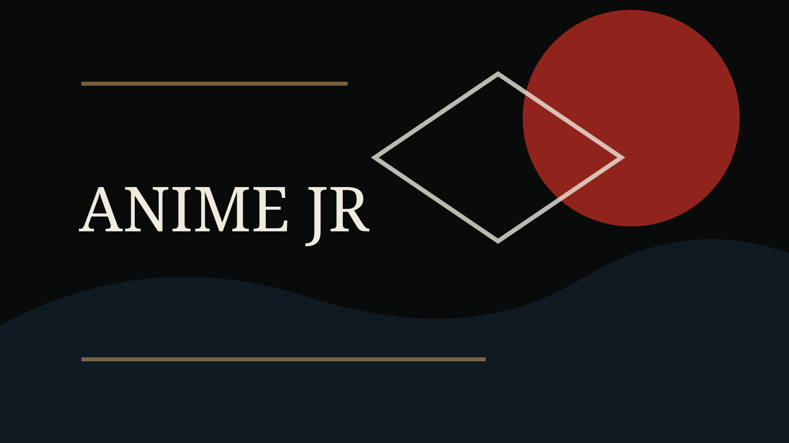

O encontro entre Rimuru e Veldora em That Time I Got Reincarnated as a Slime parece uma cena de apresentação. Mas ele funciona como uma chave da série: uma amizade improvável que transforma isolamento em projeto político.
Uma caverna como origem
Rimuru desperta em outro mundo sem corpo humano, sem passado social reconhecível e sem lugar definido. Veldora está preso, poderoso e solitário. A cena reúne duas formas diferentes de deslocamento.
Nome, confiança e política
Em Tensura, nomes têm peso. Nomear envolve reconhecimento, transformação e vínculo. A amizade entre Rimuru e Veldora antecipa a lógica que depois sustenta Tempest: alianças entre seres diferentes e integração de forças antes hostis.
Por que isso importa
Tempest nasce quando medo e força deixam de ser apenas dominação. A série usa fantasia, humor e progressão de poder para perguntar que tipo de comunidade pode surgir quando a diferença é incorporada em vez de eliminada.